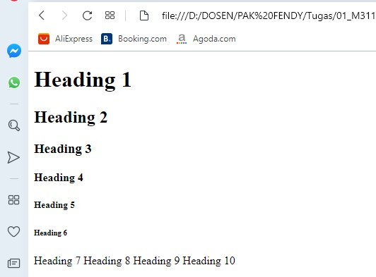

Membuat Heading
Tag heading biasanya digunakan untuk membuat judul pada halaman web, tag heading pada HTML
terdiri dari 6 tingkatan yaitu yang terdiri dari h1, h2, h3, h4, h5, h6. Tag heading secara
default di tampilkan oleh browser dengan huruf tebal (bold), tag heading yang paling besar adalah
h1 dan yang paling kecil adalah h6.
Codingan
<!DOCTYPE html>
<html>
<head>
<title>Heading</title>
</head>
<body>
<h1>Heading 1</h1>
<h2>Heading 2</h2>
<h3>Heading 3</h3>
<h4>Heading 4</h4>
<h5>Heading 5</h5>
<h6>Heading 6</h6>
<h7>Heading 7</h7>
<h8>Heading 8</h8>
<h9>Heading 9</h9>
<h10>Heading 10</h10>
</body>
</html>
Hasil codingan

Analisis
Dalam dokumen HTML hanya terdapat heading sampai dengan kedalam 6 level, maka dari itu hasil codingan
yang tertampilkan heading 7 sampai heading 10 akan seperti font pada umumnya.
Semakin besar level heading maka ukuran font yang tampil akan semakin kecil seperti pada gambar di atas.
Heading biasanya digunakan untuk memilih ukuran font untuk pengaturan penulisan judul.
Back